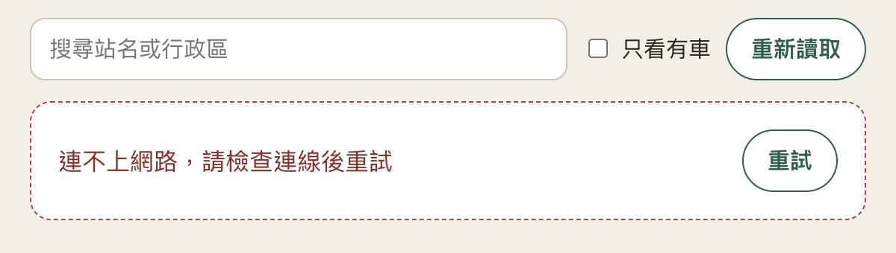
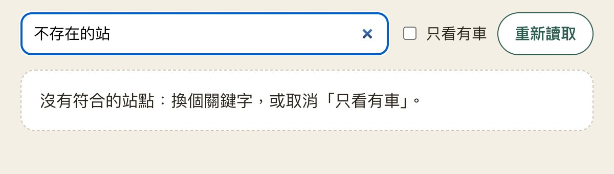
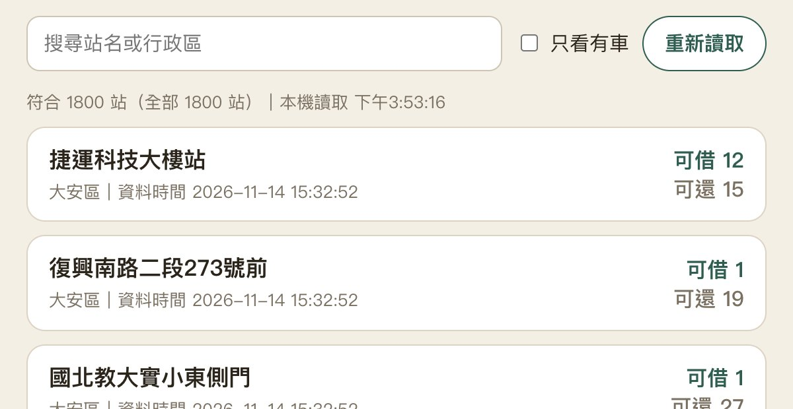
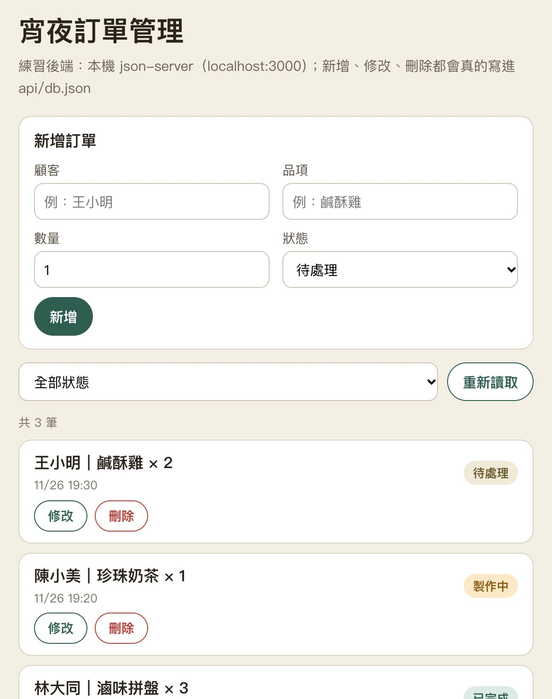
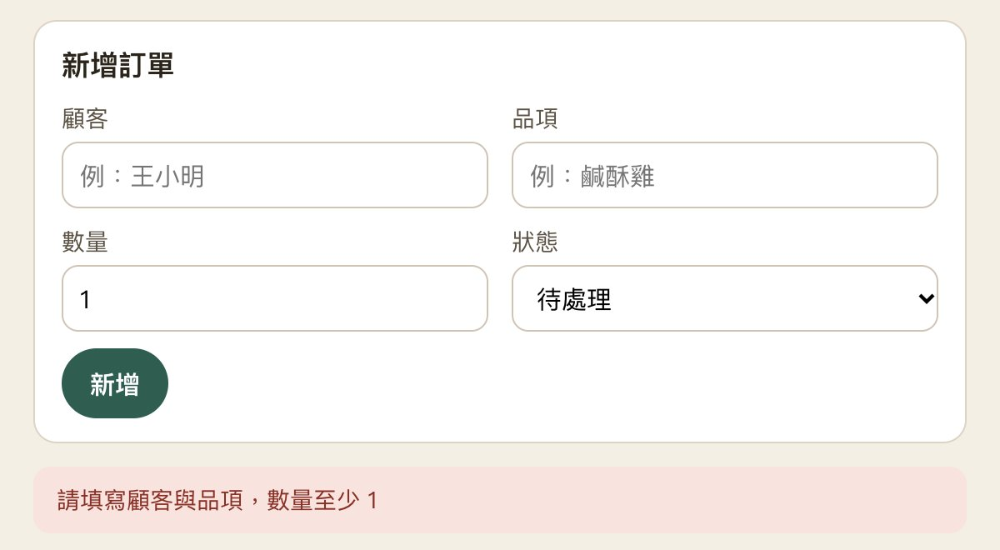
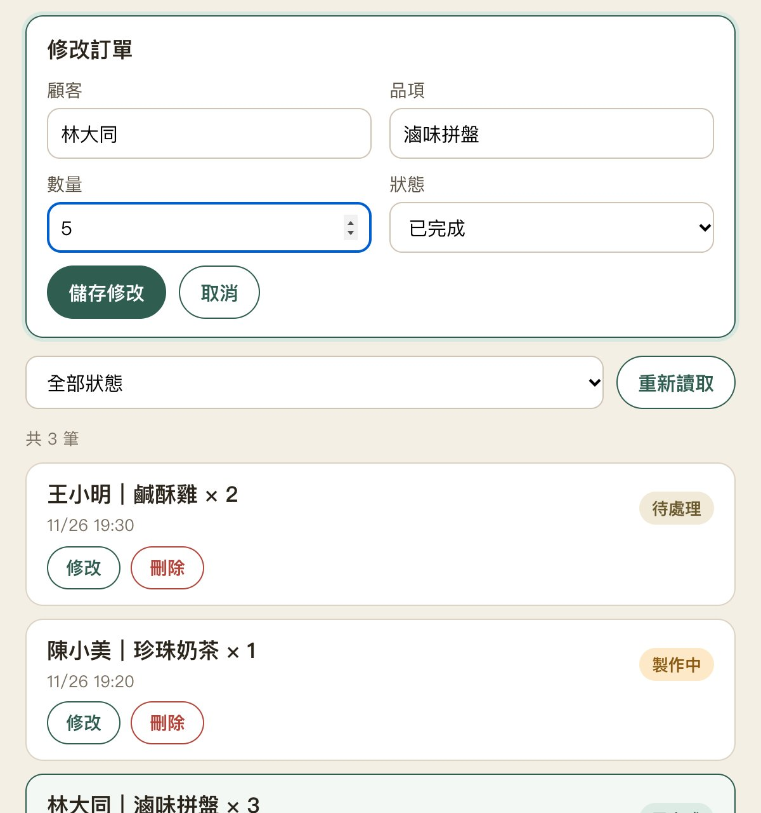

API · 11/26
HttpClient 與 Open Data
下班借車助手｜訂單 CRUD：order.api.serv.ts 新增、修改、刪除｜Open Data
API · 02
02/60
上週回顧：API 已經測通了
上週用工具把 YouBike API 讀懂、測通；今天把它接進 Angular。
- 狀態碼：2 成功、4 你的問題、5 伺服器的問題，0 是根本沒連上。
- REST：名詞網址＋方法＋狀態碼。
- Bruno 打通 YouBike：200、JSON 陣列、1,824 站、有 CORS 標頭。
- 狀態碼 → 畫面訊息對照表：今天直接寫成程式。
get {
url: {{baseUrl}}/youbike_immediate.json
}
assert {
res.status: eq 200
res.body: isArray
}API · 03
03/60
今天地圖與開發環境
上半場把 API 讀進來，下半場用 api.serv.ts 新增、修改、刪除訂單。
沿用自己的 VS Code Angular 專案（ng serve）；下半場另開一個終端機跑 json-server。ETF、預售屋、地圖等案例移到教材自學附錄。
API · 04
04/60
工具能通，瀏覽器不一定能讀：CORS
瀏覽器有一道安全檢查，測試工具沒有。
- 網頁裡的程式向「別的網域」要資料，瀏覽器會先看對方准不准。
- 准的訊號：回應標頭
Access-Control-Allow-Origin。 - YouBike 有這個標頭 → 可以直接讀；證交所 API 沒有 → 會被擋（教材附錄有實例）。
- 被擋時：看 DevTools 的 Console，Network 裡狀態會是失敗。
API · 05
05/60
為什麼用 HttpClient
Angular 內建的 HTTP 工具，比上週的 fetch 多做了好幾件事。
API · 06
06/60
兩個準備：provideHttpClient 與 Service
先開開關，再把「取資料」集中在一個 Service。
app.config.ts：開啟 HttpClient
provideHttpClient()加進 providers- 沒加會出現 NG0201：No provider found for _HttpClient
- 不使用舊的 HttpClientModule 寫法
bike.service.ts：專門取資料
- 元件只管畫面與狀態，取資料交給 Service
@Injectable({ providedIn: 'root' })- 用
inject(HttpClient)拿到工具
providers: [
provideZonelessChangeDetection(),
provideHttpClient(), // 有這行，才能用 HttpClient
],API · 07
07/60
第一個 get()：把 Bruno 的請求翻成程式
網址、方法一模一樣，只是從工具搬進程式。
GET {{host}}{{path}}getStations() {
return this.http
.get<unknown>(URL)
.pipe(map(toStations));
}get<unknown>：先不相信回來的型別，交給 toStations 檢查與轉換（第 09–10 頁）。map 是把結果換成另一個樣子。
API · 08
08/60
subscribe：訂閱之後才會送出
get() 只是「準備好的請求」，subscribe 才真的送出去。
- 沒有 subscribe：Network 面板裡看不到任何請求。
- 每 subscribe 一次就送一次：不要在迴圈裡訂閱。
- next 收成功結果、error 收失敗。
- 先學會這一層；pipe 裡的運算子第 18 頁再教。
constructor() {
this.api.getStations()
.subscribe((list) => this.stations.set(list));
}Angular 的 signal 一更新，畫面就跟著更新。
API · 09
09/60
型別標籤不是資料驗證
get<Station[]> 只是你「宣稱」它長這樣，執行時不會檢查。
- API 改版、欄位缺漏、回錯格式，TypeScript 都不會發現。
- 所以先用
unknown接，再自己檢查：是不是陣列？必要欄位有沒有？ - 格式不對就丟出錯誤，讓畫面顯示「資料格式和預期不同」。
- 不要假裝成功、也不要把錯誤資料當空清單。
export function toStations(raw: unknown): Station[] {
if (!Array.isArray(raw)) {
throw new Error('資料格式不是陣列');
}
return raw
.filter((r) => r.act === '1' && r.sno && r.sna)
.map((r) => ({ id: r.sno, name: r.sna /* … */ }));
}API · 10
10/60
原始欄位轉成畫面資料
API 的欄位名稱給機器看，畫面用的資料給人看。
snoid原樣snaname去掉「YouBike2.0_」前綴available_rent_bikesbikes不是正常數字就變 null（未知）available_return_bikesdocks同上act（篩選用）只留 "1" 營運中，停用 24 站不顯示缺值一律 null，畫面顯示「未知」；把未知當 0，使用者會以為「沒車」而白跑或錯過。
API · 11
11/60
@for 畫出站點卡片
資料是陣列，畫面就用 @for 一張一張畫。
track s.id：告訴 Angular 用哪個欄位認出同一站。??：左邊是 null 時顯示右邊，例：可借 未知。- 1,800 站一次畫出來沒問題；更大的資料再考慮分頁。
@for (s of stations(); track s.id) {
<li class="card">
<b>{{ s.name }}</b>
<span>{{ s.district }}</span>
<span>可借 {{ s.bikes ?? '未知' }}</span>
</li>
}API · 12
12/60
Loading：等資料時告訴使用者
請求送出到回來之間，畫面要說「正在讀」。
- 用
loading這個 signal 記錄是否讀取中。 - 開始時設 true，成功或失敗都要設回 false。
- 開始前先清掉舊結果與舊錯誤，避免看到過期資料。
- 讀取中把「重新讀取」按鈕停用，避免連按。
load() {
this.loading.set(true);
this.error.set('');
this.stations.set([]); // 先清掉舊結果
this.api.getStations().subscribe({ … });
}API · 13
13/60
Error 與重試：照狀態碼說人話
失敗時說明發生什麼、使用者能做什麼，並給一顆重試按鈕。
- error 分支收到
HttpErrorResponse，裡面有status。 errorText()就是 CH11 第 33 頁的對照表。- 右圖是模擬斷網的真實畫面：
status 0→ 連不上網路。 - JSON 壞掉時 status 是 200，也要顯示格式錯誤。
if (err.status === 0) return '連不上網路…'; if (err.status < 300) return '資料格式不符…'; if (err.status === 404) return '找不到資料來源…'; if (err.status >= 500) return '服務暫時有問題…';

API · 14
14/60
Empty：沒有資料也要說清楚
「載入成功但沒有符合的」和「還在讀」「讀失敗」要分開。
- 用
@if … @else if …依序判斷：讀取中 → 失敗 → 空的 → 有資料。 - 空的時候告訴使用者怎麼辦：換關鍵字、取消篩選。
- 格式錯誤不能顯示成「沒有資料」，那是兩件事。

API · 15
15/60
搜尋與只看有車
清單只讀一次，搜尋和篩選都在前端做。
keyword、onlyBikes是兩個 signal。computed：依賴的 signal 一變，結果自動重算。- 搜尋先
trim()；空白就顯示全部。 - 「只看有車」：未知不算有車。
shown = computed(() => {
const k = this.keyword().trim();
return this.stations().filter((s) =>
(!k || s.name.includes(k) || s.district.includes(k)) &&
(!this.onlyBikes() || (s.bikes ?? 0) > 0));
});API · 16
16/60
手動更新與資料時間
完成主線：可以重新讀取，並分清楚兩種時間。
- 「重新讀取」呼叫同一個
load()；讀取中停用。 - 更新後保留目前的搜尋條件。
- 資料時間：各站回報的
updateTime。 - 本機讀取時間：你按下更新的時間；兩個不要混在一起。

API · 17
17/60
Observable：會一直流的資料
HttpClient 回傳的是 Observable；它和上週 fetch 的 Promise 很像，但能做更多事。
pipe() 串接運算子API · 18
18/60
pipe：把處理步驟串起來
像工廠的生產線：資料一站一站往下流，每站做一件事。
map把資料換成另一個樣子（第 10 頁的 toStations）catchError出錯時換成預設值或錯誤訊息timeout超過時間就當失敗retry失敗時重試switchMap每次觸發就換成一個新請求（自動更新用）API · 19
19/60
timeout：別讓使用者一直等
網路很慢時，請求可能掛很久；設一個上限，超過就顯示錯誤與重試。
timeout(8000)：8 秒沒回來就丟出 TimeoutError。- 錯誤訊息：「連線逾時，請稍後再試」。
- 多久合適？看資料大小：YouBike 約 0.6 秒，8 秒很寬鬆。
- 搭配 Loading 畫面（第 12 頁）：使用者知道還在等。
getStations() {
return this.http.get<unknown>(URL).pipe(
timeout(8000), // 最多等 8 秒
map(toStations),
);
}API · 20
20/60
retry：只重試「重試有用」的錯誤
實測踩坑：retry 預設對 404 也照打；404 重試幾次都一樣，只是浪費。
- 實測
retry({ count: 2 })：錯誤網址被打了 3 次。 - 改成只在 0（斷網）、5xx（伺服器問題）重試：只打 1 次（實測）。
- 對照 CH11：4 開頭是你的問題，重送一樣的請求不會變。
- 429 不要立刻重試：要等一下（限流）。
retry({
count: 2,
delay: (err: HttpErrorResponse) =>
err.status === 0 || err.status >= 500
? timer(1000) // 等 1 秒再試
: throwError(() => err), // 4xx 直接失敗
}),API · 21
21/60
toSignal：把 Observable 變成 signal
不想自己 subscribe？toSignal 幫你訂閱，並在元件消失時自動取消。
toSignal(資料流, 初始值)。- 模板裡就像一般 signal：
stations()。 - 實測：toSignal 拿到 1,800 站（已濾掉停用站）。
- 錯誤要在 pipe 裡先 catchError，不然 signal 讀取時會丟錯誤。
- 右邊換成 [] 只示範語法：正式畫面要顯示錯誤，不要當成沒資料。
import { toSignal }
from '@angular/core/rxjs-interop';
stations = toSignal(
this.bikes.getStations().pipe(
catchError(() => of([])),
),
{ initialValue: [] },
);API · 22
22/60
攔截器：每個請求都經過的關卡
想讓所有請求都加標頭、都記錄時間、都統一處理錯誤？寫一個攔截器。
HttpInterceptorFn：一個函式，收到請求與 next。- app.config.ts 用
withInterceptors註冊。 - 實測：每個請求都印出網址與耗時（約 0.6 秒）。
- 常見用途：加金鑰標頭、記錄、統一錯誤提示、Loading 計數。
export const logInterceptor: HttpInterceptorFn =
(req, next) => {
const t0 = performance.now();
return next(req).pipe(finalize(() => {
const ms = Math.round(performance.now() - t0);
console.log(`[http] ${req.url} ${ms}ms`);
}));
};API · 23
23/60
攔截器實例：統一加標頭
需要金鑰的 API：不用每個請求都寫一次，交給攔截器。
- 請求物件不能直接改：用
req.clone()複製一份再改。 - 只對特定網域加：避免把金鑰送到別的網站。
- 前端的金鑰還是看得到（CH11）：要設定使用限制。
- 註冊方式和上一頁相同。
export const apiKeyInterceptor: HttpInterceptorFn =
(req, next) => {
if (!req.url.startsWith(environment.apiBase)) {
return next(req); // 別的網域不加
}
return next(req.clone({
setHeaders: { 'X-API-Key': environment.apiKey },
}));
};API · 24
24/60
environment：API 網址放設定檔
開發與正式環境的網址可能不同：寫在設定檔，不要散落在程式裡。
ng generate environments：產生 environment 檔案並設定替換。- 開發（ng serve）用
environment.development.ts。 - 正式（ng build）用
environment.ts。 - 這不是放祕密的地方：內容會被打包進前端。
export const environment = {
apiBase: 'https://tcgbusfs.blob.core.windows.net'
+ '/dotapp/youbike/v2',
useSnapshot: false, // true：讀 public/data 快照
};import { environment }
from '../environments/environment';
const URL =
`${environment.apiBase}/youbike_immediate.json`;API · 25
25/60
從「讀」到「寫」：宵夜訂單管理
前半場只「讀」別人的資料；下半場自己有後端，要新增、修改、刪除。
- 練習 9：宵夜訂單管理，全班必做的下半場主線。
- 資料存在本機 json-server：重新整理，資料還在。
- 學業界寫法：一個資源一支
order.api.serv.ts。 - 期末「資料記錄與保存」的雲端版，就是這個樣子。

API · 26
26/60
CRUD 對應 HTTP 方法
CH11 學過方法與 CRUD 的對應；今天把四個都寫成 Angular 程式。
/orders201＋新的那筆加到清單最前面/orders200＋陣列顯示清單/orders/:id200＋改後的那筆替換那一筆/orders/:id200（有的 API 回 204）從清單拿掉API · 27
27/60
練習後端：json-server
JSONPlaceholder 寫入不會保存；json-server 用一個 JSON 檔當資料庫，真的會存。
api/db.json放專案根目錄，和src/同層。- 另開一個終端機執行右邊的指令，上課期間保持開著。
- db.json 裡的每個陣列，自動變成一組 API：orders →
/orders。 - 新增、修改、刪除會直接改寫 db.json，打開檔案就看得到。
- 只給本機練習：沒有登入、不檢查資料。
npx json-server@1.0.0-beta.15 api/db.json JSON Server started on PORT :3000 http://localhost:3000/orders
my-app/ api/db.json // 練習用資料庫 src/app/ // Angular 程式
API · 28
28/60
db.json：資料長什麼樣
先把一筆訂單的長相定下來，前後端照同一份格式。
id由後端產生：新增時不用給。createdAt存 ISO 字串，畫面用 date pipe 顯示成 11/26 19:30。status只用三種：待處理、製作中、已完成。qty存數字，不是字串。
{
"orders": [
{
"id": "1",
"customer": "王小明",
"item": "鹹酥雞",
"qty": 2,
"status": "待處理",
"createdAt": "2026-11-26T11:30:00.000Z"
}
]
}API · 29
29/60
先用 Bruno 測通五個請求
和前半場一樣：工具裡通了，才開始寫 Angular。
GET /orders—200，三筆陣列GET /orders/1—200 一筆；/orders/999 → 404POST /ordersJSON（不含 id）201，多了後端給的 idPUT /orders/1整筆 JSON200，改後的那筆DELETE /orders/1—200；再刪一次 → 404POST、PUT 要帶標頭 Content-Type: application/json（Bruno 選 JSON body 會自動加）。2026-11-16 以 json-server 1.0.0-beta.15 實測。
API · 30
30/60
業界寫法：一個資源一支 api.serv.ts
一個真實的 Angular 電商專案，資料層長這樣：
- 每個資源一支 Service：商品、訂單、購物車、會員…
- 檔名統一
xxx.api.serv.ts：一看就知道「這支會打 API」。 index.ts統一匯出，別的地方一行 import。- 元件從不直接寫網址：只呼叫 Service 的方法。
product.api.serv.ts
cust-order.api.serv.ts
cust-cart.api.serv.ts
customer.api.serv.ts
invoice.api.serv.ts
…（共 20 多支）
index.ts // export * from …API · 31
31/60
三種型別：View、Dto、Req
看名字就知道資料往哪個方向走。
- View：讀回來、畫面要顯示的樣子（含 id）。
- Dto：新增、修改時送出去的內容（不含 id）。
- Req：查詢條件，全部可以省略。
Omit<OrderView, 'id'>：拿 View 去掉 id，不用重寫一次。
export interface OrderView {
id: string;
customer: string;
item: string;
qty: number;
status: OrderStatus;
createdAt: string;
}
export type OrderDto = Omit<OrderView, 'id'>;
export interface OrderReq {
status?: OrderStatus;
}API · 32
32/60
order.api.serv.ts（一）：讀取
先只有一個方法：讀取清單。
providedIn: 'root'：整個 App 共用一份。baseUrl：網址只寫一次。- 每個方法回傳
Observable：誰呼叫，誰 subscribe。 - 自家後端有約定格式，直接用
OrderView[]；公開資料才像 toStations 那樣檢查。
@Injectable({ providedIn: 'root' })
export class OrderApiServ {
private http = inject(HttpClient);
private readonly baseUrl =
`${environment.apiServer}/orders`;
getOrderViews(): Observable<OrderView[]> {
return this.http.get<OrderView[]>(
this.baseUrl,
{ params: { _sort: '-createdAt' } });
}
}API · 33
33/60
order.api.serv.ts（二）：新增、修改、刪除
一個方法對一個 API，方法名稱說清楚做什麼。
createOrder(dto: OrderDto): Observable<OrderView> {
return this.http.post<OrderView>(this.baseUrl, dto); // 201
}
updateOrder(id: string, dto: OrderDto): Observable<OrderView> {
return this.http.put<OrderView>(`${this.baseUrl}/${id}`, dto); // 200
}
deleteOrder(id: string): Observable<unknown> {
return this.http.delete(`${this.baseUrl}/${id}`); // 200
}PUT 是整筆取代：欄位要給齊；只想改一個欄位，正式後端通常用 PATCH。
API · 34
34/60
讀取（R）：load() 與四種狀態
和前半場的 load() 一模一樣，只是換成 OrderApiServ。
- 讀取中、失敗、空的、有資料：四種畫面都要有。
- json-server 沒開 → status 0 →「連不上 API」＋重試。
- 清單用
error、表單用actionError：送出失敗不該把整份清單蓋掉。
this.loading.set(true);
this.error.set('');
this.api.getOrderViews().subscribe({
next: (list) => {
this.orders.set(list);
this.loading.set(false);
},
error: (err) => {
this.error.set(errorText(err));
this.loading.set(false);
},
});API · 35
35/60
表單：整張表單放在一個 signal
輸入一個字，就把那一欄寫回 form。
form一個 signal 放整張表單。setField()：複製一份，只換掉那一欄。- 欄位先存字串（input 給的就是字串），送出時才
Number()。 - 12/24 會學 Reactive Forms；今天先用 signal 就夠。
form = signal<OrderForm>({ ...EMPTY_FORM });
setField(key: keyof OrderForm, value: string) {
this.form.update((f) => ({ ...f, [key]: value }));
}
<input #c [value]="form().customer"
(input)="setField('customer', c.value)">API · 36
36/60
新增（C）：save() 送出 POST
先檢查、再組 Dto、送出，成功後更新清單。
- 先在前端檢查：json-server 不會幫你擋空白。
- 組
OrderDto：不含 id，建立時間由前端給。 - 成功：API 回傳的那筆放到最前面，表單清空。
- 不必整份重讀：少一次請求，畫面也不閃。
save() {
const f = this.form();
const qty = Number(f.qty);
if (!f.customer.trim() || !(qty >= 1)) {
this.actionError.set('請填寫顧客，數量至少 1');
return;
}
const dto: OrderDto = { /* 欄位與 createdAt */ };
this.api.createOrder(dto).subscribe({
next: (saved) => this.orders.update(
(list) => [saved, ...list]),
});
}API · 37
37/60
送出中：saving 防止重複送出
網路慢時，使用者會連按「新增」，結果新增了兩筆。
- 送出前
saving.set(true)，按鈕加[disabled]="saving()"。 - 成功或失敗都要設回 false：和 loading 同一個道理。
- 按鈕文字
{{ saving() ? '送出中…' : '新增' }}：使用者知道有在動。 - 右圖：空白顧客按新增，前端直接擋下，根本沒有送出。

API · 38
38/60
修改（U）：先把舊值帶進表單
按「修改」，表單變成修改模式。
editing記住正在改哪一筆；null 就是新增模式。form.set()帶入舊值；數量轉回字串。- 標題變「修改訂單」、按鈕變「儲存修改」，多一顆「取消」。
- 清單上正在改的那筆加框，使用者不會改錯。

API · 39
39/60
修改（U）：同一個 save()，兩條路
editing 有值就呼叫 updateOrder，沒有就 createOrder。
- PUT 是整筆取代：沒送的欄位會不見，所以 createdAt 要帶原本的。
- 成功後用
map換掉同 id 的那一筆。 req$結尾的 $ 是慣例：代表它是 Observable。
const cur = this.editing();
const dto: OrderDto = { /* … */
createdAt: cur ? cur.createdAt // 保留原本時間
: new Date().toISOString() };
const req$ = cur
? this.api.updateOrder(cur.id, dto)
: this.api.createOrder(dto);
req$.subscribe({ next: (saved) =>
this.orders.update((list) => cur
? list.map((o) => o.id === saved.id ? saved : o)
: [saved, ...list]) });API · 40
40/60
刪除（D）：先確認，再刪
刪除無法復原：一定要先問。
confirm()按取消就直接結束。- 成功後用
filter把那筆拿掉。 - 正在修改的那筆被刪了：表單也要清掉。
- 刪除鍵用紅色、和修改分開，避免誤按。
remove(o: OrderView) {
if (!confirm(`確定刪除「${o.customer}」？`)) {
return;
}
this.api.deleteOrder(o.id).subscribe({
next: () => this.orders.update((list) =>
list.filter((x) => x.id !== o.id)),
error: (err) =>
this.actionError.set(errorText(err)),
});
}API · 41
41/60
改完之後，畫面怎麼更新
三種做法，各有取捨。
有篩選條件時（第 6 步），改完重新讀取最保險：改過的那筆可能已經不符合條件。
API · 42
42/60
錯誤處理：CRUD 會遇到的狀態碼
和前半場的對照表同一套，換成訂單的說法。
實測：開兩個分頁，A 先刪、B 再刪同一筆 → 404。json-server 不檢查資料，前端驗證一定要做。
API · 43
43/60
攔截器補網址前綴（第 6 步）
Service 只寫 /orders，網址前綴交給攔截器統一補上。
- 換環境（本機 → 正式）只改 environment 一行。
- 只補 / 開頭的路徑：完整網址與 data/ 快照都不動。
- 業界專案的「Request 攔截器」做的就是這件事。
export const apiServerInterceptor: HttpInterceptorFn =
(req, next) => {
if (!req.url.startsWith('/')) {
return next(req); // 完整網址、data/ 快照：不動
}
return next(req.clone({
url: environment.apiServer + req.url,
}));
};
// app.config.ts
provideHttpClient(
withInterceptors([apiServerInterceptor]))API · 44
44/60
查詢條件：OrderReq → HttpParams
查詢條件包成一個物件，Service 負責組成網址。
- 元件只傳
{ status: '已完成' }，不用管網址怎麼拼。 - 有條件才
set()：空的不要送。 HttpParams會自動把中文編碼（CH11 的 URL 編碼）。- 換篩選就重新向 API 查：資料多時比前端篩省流量。
getOrderViews(req: OrderReq = {}) {
let params = new HttpParams()
.set('_sort', '-createdAt');
if (req.status) {
params = params.set('status', req.status);
}
return this.http.get<OrderView[]>(
this.baseUrl, { params });
}
// 送出：/orders?_sort=-createdAt
// &status=%E5%B7%B2%E5%AE%8C%E6%88%90API · 45
45/60
業界專案的三支攔截器
同一個電商專案裡，每個請求都會經過這三支攔截器。
Authorization: Bearer …前半場「統一加標頭」那一頁另外常見：分頁查詢 PagingRequest<OrderReq> → PagingResponse<OrderView>，一次只拿一頁。json-server 不檢查 token，所以練習 9 不加 Authorization。
API · 46
46/60
Angular 16 舊寫法 vs Angular 20
進公司可能看到舊專案：觀念一樣，只是寫法換了。
constructor(private http: HttpClient)private http = inject(HttpClient)HttpClientModule 放進 NgModuleprovideHttpClient()HttpInterceptor＋HTTP_INTERCEPTORSHttpInterceptorFn 函式＋withInterceptors*ngFor@for (…; track …)API · 47
47/60
練習 9｜宵夜訂單管理（6 步驟）
下半場主線：照範例頁六步做完，CRUD 就全部用到了。
- 1 型別、db.json、起始畫面 2 api.serv.ts 讀取
- 3 新增與送出中 4 修改：帶入舊值
- 5 刪除：先確認 6 攔截器與查詢條件
- 驗收：新增後打開 db.json 看得到；修改後重新整理仍是新值。
API · 48
48/60
Open Data 能幫誰
政府與機構公開、可以再利用的資料，就是做小工具最便宜的原料。
付費價值通常不在「資料本身」，而在整理、整合、客製與維護。這些都是待驗證的商業假設。
API · 49
49/60
讀資料集：下載前先看五件事
以「臺中市路外剩餘車位」為例（2026-11-14 查閱）。
API · 50
50/60
四種資料形態：前端能不能直接用
不是每份 Open Data 都能直接丟給 HttpClient。
API · 51
51/60
資料契約：欄位對照表
寫程式前，先把「來源欄位 → 畫面欄位」寫成一張表，團隊才有共同依據。
ID文字停車場代號id沒有就不顯示Position文字「行政區-單位-名稱」district、name有 2 筆行政區寫法不一致AvailableCarRGB文字滿車率燈號lightG／Y／R 以外一律未知TotalCar數字汽車格數total不是數字就未知這張表就是練習 3 的 parking.ts。資料改版時，先改表、再改程式。
API · 52
52/60
限流（429）與失敗備援
公開 API 不是無限量的；被限流或掛掉時，畫面要有退路。
- 429：太頻繁。照
Retry-After等，或降低頻率。 - 不要做「每秒自動更新」：手動更新＋顯示資料時間就夠。
- 備援：失敗時讓使用者自己選擇改看快照，畫面標示「教學快照／非即時」。
- 不可以默默換成舊資料、假裝成功。
不好默默用舊資料
- 畫面看起來正常
- 使用者以為是即時的
- 依舊資料出門白跑
好明講並讓人選
- 「即時資料讀取失敗」
- 按鈕：改看 11/14 快照
- 畫面標「非即時」
API · 53
53/60
更多資料來源與案例：教材自學附錄
下面這些移到教材文字版；做選做題或想深入時再看。
位置：docs/01_每週教材/week12_1126_API串接與OpenData/ 教材檔最後的「自學附錄」；九題範例頁 examples/ 全部保留。
API · 54
54/60
選做總覽：主線之外挑一題
練習 1、9 是主線，全班必做；練習 2–8 選做，挑一題即可。
API · 55
55/60
驗收案例與常見錯誤
做完先用這幾個案例自己測，再找同學驗收。
一定要測的案例
- 正常：有資料、數量合理；缺值顯示「未知」
- 失敗：網址改錯一個字或關掉 json-server，看到錯誤與重試
- 新增、修改後打開 db.json 看得到；重新整理仍在
- 刪除前會詢問；送出中按鈕停用
- 空白欄位按送出：前端擋下，不送出
常見錯誤
- NG0201（No provider found for _HttpClient）：忘了 provideHttpClient()
- 畫面沒變：忘了 subscribe
- status 0：json-server 沒開，或 port 打錯
- PUT 後欄位不見：沒送完整資料
- 一直顯示 0：把 null 當成 0 了
API · 56
56/60
請 AI 幫忙：貼真的資料，不要讓它猜
AI 最常出錯的地方是「猜」API 的格式。
不好讓 AI 猜
- 「幫我用 Angular 串 YouBike API」
- AI 自己編欄位名稱
- 程式看起來對，執行就壞
好給 AI 事實
- 貼上 Bruno 測到的一筆真實 JSON
- 說明欄位意思、缺值規則、要哪幾種狀態
- 要求「沿用我的 station.ts 介面」
提示詞範本
這是 API 實際回傳的一筆資料：（貼上）。請用 Angular 20 HttpClient 與 signals，
寫一個 Service 與元件：處理 Loading／Error／Empty，缺值顯示「未知」。不要新增我沒提到的欄位。
API · 57
57/60
HttpClient 常見錯誤對照
先看主控台的錯誤原文，再對照原因。
NG0201: No provider found for _HttpClient沒加 provideHttpClient()app.config.ts 加上blocked by CORS policy對方沒給 CORS 標頭快照或後端代理Http failure response … 404網址或快照路徑錯對照 Bruno 的網址status 0（Unknown Error）json-server 沒開、port 打錯另開終端機啟動 json-serverHttp failure during parsing回來的不是 JSON把網址貼到瀏覽器看內容API · 58
58/60
隨堂小測驗
不計分：確認今天的重點。先遮住右欄再想。
API · 59
59/60
今天的資料，和期末的「資料保存」
今天的資料來自 API；12/24 會學讓「使用者自己的資料」記得住。
API 資料（今天）
- 來源是別人：政府、企業
- 重新整理會重新取得
- 要處理 Loading／Error／Empty
- 期末「上線與可用性」看得到
使用者資料（12/24）
- 來源是使用者：收藏、紀錄、評分
- 要存起來：localStorage 或 Supabase
- 期末「資料記錄與保存」30 分
- 練習 9 的 CRUD 寫法可以直接沿用
json-server 只在本機練習；12/24 的 Supabase 是真的雲端資料庫，「一個資源一支 Service」的寫法照用。期末：1/7 Demo，1/14（含）前上傳報告與網址。
API · 60
60/60
保存、作業與下週預告
下課前把今天的成果存好。
保存與作業
- 主線專案能
ng serve正常執行 - 下週會教 Git：先把專案資料夾整理好（api/db.json 一起保存）
- 課後練習（不計分）：練習 9 做到第 5 步，看 db.json 有沒有跟著變
- 練習 2–8 自由選做；快照檔放 public/data/
下週 12/3：Git 與部署上線
- 把期中作品推上 GitHub
- ng deploy 部署到 GitHub Pages
- 今天的快照與 https 檢查，部署後再測一次
- 還沒裝 Git：先打 git --version 確認
範例頁與快照：docs/02_簡報/week12_1126_API串接與OpenData/examples/（可離線開啟）。